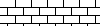
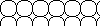
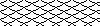
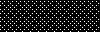
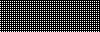
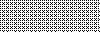
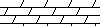
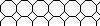
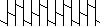

October 28, 2003
ImageMagick学习
 ImageMagick是一套稳定的工具集和开发包，可以用来读、写和处理超过89种基本格式的图片文件，包括流行的TIFF, JPEG, GIF, PNG, PDF以及PhotoCD等格式。利用ImageMagick，你可以根据web应用程序的需要动态生成图片, 还可以对一个图片或图片序列进行改变大小、旋转、锐化、减色或增加特效，并将操作的结果以相同格式或其它格式保存。对图片的操作，可以通过命令行进行，也可以用C/C++、Perl、Java、PHP、Python或Ruby编程来完成。同时ImageMagick提供了一个高质量的2D工具包，部分地支持SVG。现在，ImageMagic的主要精力集中在性能、减少bug以及提供稳定的API和ABI上。
ImageMagick是一套稳定的工具集和开发包，可以用来读、写和处理超过89种基本格式的图片文件，包括流行的TIFF, JPEG, GIF, PNG, PDF以及PhotoCD等格式。利用ImageMagick，你可以根据web应用程序的需要动态生成图片, 还可以对一个图片或图片序列进行改变大小、旋转、锐化、减色或增加特效，并将操作的结果以相同格式或其它格式保存。对图片的操作，可以通过命令行进行，也可以用C/C++、Perl、Java、PHP、Python或Ruby编程来完成。同时ImageMagick提供了一个高质量的2D工具包，部分地支持SVG。现在，ImageMagic的主要精力集中在性能、减少bug以及提供稳定的API和ABI上。
ImageMagick功能强大，却免费的。
ImageMagick的功能
包括：{kind=link}
- 将图片从一个格式转换到另一个格式
- 改变尺寸、旋转、锐化(sharpen)、减色、图片特效
- 缩略图片的合成图( a montage of image thumbnails)
- 适于web的背景透明的图片
- 将一组图片做成gif动画
- 将几张图片做成一张组合图片
- 在一个图片上写字或画图形
- 给图片加边框或框架
- 取得一些图片的特性信息
右面是一些例子。
ImageMagick几乎可以在任何非专有的操作系统上编译，无论是32位还是64位的CPU，包括*nix ，Windows '95/'98/ME/NT 4.0/2000/XP, Macintosh (MacOS 9 /10), VMS 和 OS/2.
下载安装
ImageMagick在很多服务器上都可以下到，甚至很多个人站点也提供了下载。建议到ImageMagick的官方主页上下载最新版本的源码包，我下的是ImageMagick-5.5.6.tar.gz，在linux下的安装过程如下：cd ImageMagick-5.5.6
./configure
make all
su
make install
注意不要忘记，将ImageMagick安装后的函数库所在目录加入到/etc/profile文件中的LD_LIBRARY_PATH环境变量中，以及/etc/ld.so.conf中同时运行ldconfig，否则一些对ImageMagic的应用可能会出问题。
使用说明
| 程序名 | 命令行参数 | 说明 |
| animate | [ options ... ] file [ [ options ... ] file ... ] | 显示一个图片序列。为防止颜色闪烁，它会费时为图片序列创建一个颜色表，这可通过减色来加快速度，参见 http://www.wizards.dupont.com/cristy/www/animate.html。 |
| composite | [ options ... ] image composite [ mask ] composited | 将图片合成为新图片。 |
| conjure | [ options ] script.msl [ [ options ] script.msl ] | 解释并执行Magick Scripting Language (MSL).语言脚本。 |
| convert | [ [ options ... ] [ input_file ... ] ... [ output_file ] ] | 转换图片的大小、格式等。 |
| display | [ options ... ] file ... [ [options ... ]file ... ] | 一个独立于机器框架的图片处理和显示程序，能在任何运行X服务器的工作站上显示图片。 |
| identify | file [ file ... ] | 描述一张或一些图片的格式或个性信息，如果图片不完整或被破坏也会有相应报告。 |
| import | [ options ... ] file | 读取X服务器上任何可见窗口中的图象将输出为图片文件。可以用它抓取一个窗口、整个屏幕或屏幕上的任何矩形区域。 |
| mogrify | [ options ... ] file ... | 转换一张图片或一个图片序列. 包括图片缩放、旋转、减色及其它操作。转换结果覆盖原图片。 |
http://www.imagemagick.org/www/utilities.html 有对命令行参数的详细说明，http://www-106.ibm.com/developerworks/library/l-graf/?ca=dnt-428有一些使用例程。http://www.starlink.rl.ac.uk/star/docs/sc15.htx/node57.html有一些说明。
ImageMagick还支持一种平台无关的文件格式Magick Image File Format (MIFF)格式，用来保存bitmap图片.ImageMagick能将MIFF与JPEG, XPM, TIFF等多种格式的图片互相转换。
附：ImageMagick支持图片格式、内建图片和图片模板以及嵌入图片模板。
Supported ImageFormats
Format | Mode | Description | Notes |
|---|---|---|---|
| ART | R | PFS:1st Publisher | Formatoriginally used on the Macintosh (MacPaint?) and later used forPFS: 1st Publisher clip art. |
| R | MicrosoftAudio/Visual Interleaved | ||
| AVS | RW | AVS Ximage | |
| RW | MicrosoftWindows bitmap | ||
| CGM | R | ComputerGraphics Metafile | Requiresralcgm torender CGM files. |
| RW | KodakCineon Image Format | Cineon Image Format is a subset of SMTPE DPX. | |
| CMYK | RW | Rawcyan, magenta, yellow, and black samples | Set-size and-depth to specify theimage width, height, and depth. |
| CUR | R | MicrosoftCursor Icon | |
| CUT | R | DR Halo | |
| DCM | R | DigitalImaging and Communications in Medicine (DICOM) image | Usedby the medical community for images like X-rays. |
| DCX | RW | ZSoftIBM PC multi-page Paintbrush image | |
| DIB | RW | MicrosoftWindows Device Independent Bitmap | DIB is aBMP file without theBMP header. Used to support embedded images incompound formats like WMF. |
| DPX | RW | DigitalMoving Picture Exchange | |
| EMF | R | MicrosoftEnhanced Metafile (32-bit) | Onlyavailable under Microsoft Windows. |
| EPDF | RW | EncapsulatedPortable Document Format | |
| EPI | RW | AdobeEncapsulated PostScript Interchange format | RequiresGhostscriptto read. |
| EPS | RW | AdobeEncapsulated PostScript | RequiresGhostscriptto read. |
| EPS2 | W | AdobeLevel II Encapsulated PostScript | RequiresGhostscriptto read. |
| EPS3 | W | AdobeLevel III Encapsulated PostScript | RequiresGhostscriptto read. |
| EPSF | RW | AdobeEncapsulated PostScript | RequiresGhostscriptto read. |
| EPSI | RW | AdobeEncapsulated PostScript Interchange format | RequiresGhostscriptto read. |
| EPT | RW | Adobe Encapsulated PostScript Interchange format withTIFF preview | RequiresGhostscriptto read. |
| FAX | RW | Group3 TIFF | SeeTIFF format. Note that FAXmachines use non-square pixels which are 1.5 times wider than theyare tall but computer displays use square pixels so FAX images mayappear to be narrow unless they are explicitly resized using aresize specification of "150x100%". |
| R | FIGgraphics format | RequiresTransFig. | |
| RW | FlexibleImage Transport System | ||
| FPX | RW | FlashPixFormat | RequiresFlashPixSDK. |
| GIF | RW | CompuServeGraphics Interchange Format | 8-bitRGB PseudoColor with up to 256 palette entires. Specify theformat "GIF87" to write the older version 87a of the format.Note that since Unisys claims apatent onthe LZW algorithm (expiring world-wide as of June 2004) used byGIF, ImageMagick binary distributions do not include support forthe LZW algorithm so GIF files are written uncompressed. Users arerecommended to use the PNG or JPEG formats instead, and shouldconsult theUnisysLZW web page before enabling LZW support. |
| GPLT | R | Gnuplotplot files | Requiresgnuplot3.5.tar.Zor later. |
| GRAY | RW | Rawgray samples | Use-size and-depth to specify theimage width, height, and depth. |
| HPGL | R | HP-GLplotter language | Requireshp2xx-3.2.0.tar.gz |
| HTML | RW | HypertextMarkup Language with a client-side image map | Also known as "HTM". Requireshtml2ps to read. |
| ICO | R | Microsofticon | Alsoknown as "ICON". |
| JBIG | RW | JointBi-level Image experts Group file interchange format | Also known as "BIE" and "JBG". Requiresjbigkit-1.0.tar.gz. |
| RW | Multiple-imageNetwork Graphics | JPEG in a PNG-style wrapper with transparency. Requireslibjpeg and libpng-1.0.2 or later,libpng-1.2.5or later recommended. | |
| JP2 | RW | JPEG-2000JP2 File Format Syntax | Requiresjasper-1.600.0.zip |
| JPC | RW | JPEG-2000Code Stream Syntax | Requiresjasper-1.600.0.zip |
| JPEG | RW | JointPhotographic Experts Group JFIF format | Requiresjpegsrc.v6b.tar.gz |
| MAN | R | Unixreference manual pages | Requiresthat GNU groff and Ghostcript are installed. |
| MAT | R | MATLABimage format | |
MIFF | RW | Magickimage file format | OpenImageMagick's own image format (with ASCII header) which ensuresthat no image attributes understood by ImageMagick are lost. |
| MONO | RW | Bi-levelbitmap in least-significant-byte first order | |
| RW | JPEGNetwork Graphics | Requires libpng-1.0.2 or later,libpng-1.2.5or later recommended. | |
| RW | MotionPicture Experts Group file interchange format (version 1) | Requiresmpeg2vidcodec_v12.tar.gz. | |
| RW | MotionPicture Experts Group file interchange format (version 2) | Requiresmpeg2vidcodec_v12.tar.gz. | |
| MPC | RW | MagickPersistent Cache image file format | Thenative "in-memory" ImageMagick uncompressed file format. Thisfile format is identical to that used by Open ImageMagick torepresent images in memory and is read in "zero time" via memorymapping. The MPC format is not portable and is not suitable as anarchive format. It is suitable as an intermediate format forhigh-performance image processing.TheMPC format requires two files to support one image. When writingthe MPC format, a file with extension ".mpc" is used to storeinformation about the image, while a file with extension “.cache”stores the image pixels. The storage space required by a MPC image(or an image in memory) may be calculated by the equation(QuantumDepth*Rows*Columns*5)/8. |
| MSL | RW | MagickScripting Language | MSL is the XML-based scripting language supported by the conjure utility. |
| MTV | RW | MTVRaytracing image format | |
| MVG | RW | MagickVector Graphics. | The native ImageMagick vector metafile format. A textfile containing vector drawing commands accepted by convert's -draw option. |
| OTB | RW | On-the-airBitmap | |
| P7 | RW | Xv'sVisual Schnauzer thumbnail format | |
| PALM | RW | Palmpixmap | |
| PBM | RW | Portablebitmap format (black and white) | |
| PCD | RW | PhotoCD | Themaximum resolution written is 768x512 pixels since larger imagesrequire huffman compression (which is not supported). |
| PCDS | RW | PhotoCD | Decodewith the sRGB color tables. |
| PCL | W | HPPage Control Language | Foroutput to HP laser printers. |
| PCX | RW | ZSoftIBM PC Paintbrush file | |
| PDB | RW | PalmDatabase ImageViewer Format | |
| RW | PortableDocument Format | RequiresGhostscriptto read. | |
| PFA | R | PostscriptType 1 font (ASCII) | Openingas file returns a preview image. |
| PFB | R | PostscriptType 1 font (binary) | Openingas file returns a preview image. |
| PGM | RW | Portablegraymap format (gray scale) | |
| PICON | RW | PersonalIcon | |
| PICT | RW | AppleMacintosh QuickDraw/PICT file | |
| PIX | R | Alias/WavefrontRLE image format | |
| RW | PortableNetwork Graphics | Requires libpng-1.0.2 or later,libpng-1.2.5or later recommended. | |
| PNM | RW | Portableanymap | PNM isa family of formats supporting portable bitmaps (PBM) , graymaps(PGM), and pixmaps (PPM). There is no file format associated withpnm itself. If PNM is used as the output format specifier, thenImageMagick automatically selects the most appropriate format torepresent the image.The default is to write the binary version of theformats. Use+compress to write the ASCII version of theformats. |
| PPM | RW | Portablepixmap format (color) | |
| PS | RW | AdobePostScript file | RequiresGhostscriptto read. |
| PS2 | RW | AdobeLevel II PostScript file | RequiresGhostscriptto read. |
| PS3 | RW | AdobeLevel III PostScript file | RequiresGhostscriptto read. |
| PSD | RW | AdobePhotoshop bitmap file | |
| PTIF | RW | Pyramid encodedTIFF | Multi-resolutionTIFF containingsuccessively smaller versions of the image down to the size of anicon. The desired sub-image size may be specified when reading viathe -size option. |
| R | SeattleFile Works multi-image file | ||
| RAD | R | Radianceimage file | Requiresthatra_ppm from the Radiance software package beinstalled. |
| RGB | RW | Rawred, green, and blue samples | Use-size and-depth to specify theimage width, height, and depth. |
| RGBA | RW | Rawred, green, blue, and matte samples | Use-size and-depth to specify theimage width, height, and depth. |
| RLA | R | Alias/Wavefrontimage file | |
| RLE | R | UtahRun length encoded image file | |
| R | ScitexContinuous Tone Picture | ||
| R | SeattleFile Works image | ||
| SGI | RW | IrixRGB image | |
| SHTML | W | HypertextMarkup Language client-side image map | Used to write HTML clickable image maps based on a theoutput of montage or a format whichsupports tiled images such as MIFF. |
| SUN | RW | SUNRasterfile | |
| RW | ScalableVector Graphics | Requireslibxml2 andfreetype-2. Note that SVG is avery complex specification so support is still not complete. | |
| TGA | RW | TruevisionTarga image | Alsoknown as formats "ICB", "VDA", and "VST". |
| TIFF | RW | TaggedImage File Format | Also known as "TIF". Requirestiff-v3.5.4.tar.gzor later. Note that since Unisys claims apatent onthe LZW algorithm (expiring in the US as of June 2003) used byLZW-compressed TIFF files, ImageMagick binary distributions do notinclude support for the LZW algorithm so LZW TIFF files can not bewritten. Although a patch is available for libtiff to enablebuilding with LZW support. Users should consult theUnisys LZW web pagebefore applying it. |
| TIM | R | PSXTIM file | |
| R | TrueTypefont file | Requiresfreetype 2.Opening as file returns a preview image. | |
| TXT | RW | Rawtext file | |
| UIL | W | X-MotifUIL table | |
| UYVY | RW | InterleavedYUV raw image | Use-size command line option to specify widthand height. |
| VICAR | RW | VICARrasterfile format | |
| VIFF | RW | KhorosVisualization Image File Format | |
| RW | Wirelessbitmap | Supportfor uncompressed monochrome only. | |
| WindowsMetafile | Requireslibwmf.By default, renders WMF files using the dimensions specified by themetafile header. Use the -density option to adjust the outputresolution, and thereby adjust the ouput size. The default outputresolution is 72DPI so "-density 144" results in an image twiceas large as the default. Use-background color tospecify the WMF background color (default white) or-texturefilename to specify a background texture image. | ||
| WPG | R | WordPerfect Graphics File | |
| XBM | RW | XWindows system bitmap, black and white only | Usedby the X Windows System to store monochrome icons. |
| XCF | R | GIMPimage | |
| RW | XWindows system pixmap | Alsoknown as "PM". Used by the X Windows System to store color icons. | |
| XWD | RW | XWindows system window dump | Usedby the X Windows System to save/display screen dumps. |
| YUV | RW | CCIR601 4:1:1 | Use-size command line option to specify widthand height. |
Pseudo ImageFormats
| Tag | Mode | Description | Notes |
|---|---|---|---|
CAPTION | R | Imagecaption | fixme |
| CLIPBOARD | RW | WindowsClipboard | Onlyavailable under Microsoft Windows. |
| FRACTAL | R | Plasmafractal image | |
| GRADIENT | R | Gradualpassing from one shade to another | Returns a rendered gradient image using the specifiedimage size. Specify the desired shading as part of the filename(e.g. "gradient:red-blue"or "gradient:#F00-#00F"). |
| HISTOGRAM | W | Histogramof the image | |
| LABEL | R | Textimage format | Specify the desired text as the filename (e.g. "label:Thisis a label"). |
| MAP | RW | Colormapintensities and indices | Set-depth to set the sample size of the intensities; indices are16-bit if colors > 256. |
| MATTE | W | MATTEformat | Writeonly. |
| NULL | RW | NULLimage | Useful for creating blank tiles with montage (use "NULL:"). Also useful as anoutput format when evaluating image read performance. |
| PLASMA | R | Plasmafractal image | |
| PREVIEW | W | Show apreview an image enhancement, effect, or f/x | Creates a preview montage of images prepared over aparameteric range in order to assist with parameter selection.Specify the desired preview type via the -preview option). |
| W | Sendimage to your computer printer | Unixusers may set the PRINTER (for 'lp') or LPDEST (for 'lpr')environment variables to select the desired printer. | |
| SCAN | R | Importimage from a scanner device | Requires SANESpecify the device name and path as the filename (e.g. "scan:mustek:/dev/scanner"). |
| STEGANO | R | Steganographicimage | Use -size command line option to specify width,height, and offset of the steganographic image |
| TILE | R | Tiledimage | Createa tiled version of an image at by tiling a image. Use -size tospecify the tiled image size. The image is specified similar to "TILE:image.miff". |
| VID | RW | VisualImage Directory | Used to create a thumbnailed directory (tiled thumbnails)of a set of images which may be used to select images to view viathe display program, or saved to a MIFF or SHTML file. |
| WIN | RW | Selectimage from or display image to your computer screen | Onlysupported under Microsoft Windows. |
| X | RW | Selectimage from or display image to your X server screen | Also see the import and display programs. |
| XC | R | Canvasimage of specified color | Useful to create solid color "canvas" images. Use -sizeand -depth to specify the image width, height, anddepth. Example XC color specifications include "XC:red" and "XC:#FF0000". |
Built-in Image Formats
| Name | Description | Notes/Sample |
|---|---|---|
| GRANITE | 128x128granite texture pattern | |
| LOGO | 640x480,ImageMagick Logo | |
| NETSCAPE | 216x144image using colors in Netscape 216 (6x6x6 ) color cube. | |
| ROSE | 70x46,Picture of a rose. |
Built-inImage Patterns
| Name | Description | Notes/Sample |
|---|---|---|
| BRICKS | 16x16brick pattern |  |
| CHECKERBOARD | 30x30checkerboard pattern | |
| CIRCLES | 16x16circles pattern |  |
| CROSSHATCH | 8x4crosshatch pattern | |
| CROSSHATCH30 | 8x4crosshatch pattern with lines at 30 degrees. | |
| CROSSHATCH45 | 8x4crosshatch pattern with lines at 45 degrees. | |
| FISHSCALES | 16x8fish scales pattern |  |
| GRAY0 | 32x320% intensity gray |  |
| GRAY5 | 32x325% intensity gray | |
| GRAY10 | 32x3210% intensity gray |  |
| GRAY15 | 32x3215% intensity gray |  |
| GRAY20 | 32x3220% intensity gray |  |
| GRAY25 | 32x3225% intensity gray |  |
| GRAY30 | 32x3230% intensity gray | |
| GRAY35 | 32x3235% intensity gray |  |
| GRAY40 | 32x3240% intensity gray |  |
| GRAY45 | 32x3245% intensity gray |  |
| GRAY50 | 32x3250% intensity gray | |
| GRAY55 | 32x3255% intensity gray |  |
| GRAY60 | 32x3260% intensity gray |  |
| GRAY65 | 32x3265% intensity gray |  |
| GRAY70 | 32x3270% intensity gray |  |
| GRAY75 | 32x3275% intensity gray |  |
| GRAY80 | 32x3280% intensity gray | |
| GRAY85 | 32x3285% intensity gray | |
| GRAY90 | 32x3290% intensity gray |  |
| GRAY95 | 32x3295% intensity gray |  |
| GRAY100 | 32x32100% intensity gray | |
| HEXAGONS | 30x18hexagon pattern |  |
| HORIZONTAL | 8x4horizontal line pattern | |
| HORIZONTALSAW | 16x8horizontal saw-tooth pattern | |
| HS_BDIAGONAL | 8x8backward diagonal line pattern (45 degrees slope) | |
| HS_CROSS | 8x8cross line pattern | |
| HS_DIAGCROSS | 8x8diagonal line cross pattern (45 degrees slope) | |
| HS_FDIAGONAL | 8x8forward diagonal line pattern (45 degrees slope) | |
| HS_HORIZONTAL | 8x8horizontal line pattern | |
| HS_VERTICAL | 8x8vertical line pattern | |
| LEFT30 | 8x4forward diagonal pattern (30 degrees slope) |  |
| LEFT45 | 8x8forward diagonal line pattern (45 degrees slope) |  |
| LEFTSHINGLE | 24x24left shingle pattern |  |
| OCTAGONS | 16x16octagons pattern |  |
| RIGHT30 | 8x4backward diagonal line pattern (30 degrees) |
|
| RIGHT45 | 8x8backward diagonal line pattern (30 degrees) | |
| RIGHTSHINGLE | 24x24right shingle pattern | |
| SMALLFISHSCALES | 8x8small fish scales pattern | |
| VERTICAL | 8x8vertical line pattern | |
| VERTICALBRICKS | 16x16vertical brick pattern | |
| VERTICALLEFTSHINGLE | 24x24vertical left shingle pattern |  |
| VERTICALRIGHTSHINGLE | 24x24vertical right shingle pattern | |
| VERTICALSAW | 8x16vertical saw-tooth pattern |
| Format | Mode | Description | Notes |
|---|---|---|---|
| 8BIM | RW | Photoshopresource format (binary) | |
| 8BIMTEXT | RW | Photoshopresource format (ASCII) | AnASCII representation of the 8BIM format. |
| APP1 | RW | Rawapplication information | |
| APP1JPEG | RW | RawJPEG binary data | Profilein JPEG wrapper. |
| ICC | RW | InternationalColor Consortium color profile | |
| IPTC | RW | IPTCNewsphoto (binary) | |
| IPTCTEXT | RW | IPTCNewsphoto (ASCII) | AnASCII representation of the IPTC format. |
http://www.imagemagick.org/www/Magick++/STL.html
这个页面中有一个东东能加水印到一个图片上，是这样说的：
steganoImage const Image &watermark_ Add a digital watermark to the image (based on second image)
可是我实在不知道怎么弄？
里面有这样一段
#include
#include
using namespace std;
using namespace Magick;
int main(int /*argc*/,char **/*argv*/)
{
list imageList;
readImages( &imageList, "test_image_anim.gif" );
Image appended;
appendImages( &appended, imageList.begin(), imageList.end() );
appended.write( "appended_image.miff" );
return 0;
}
我在jsp里怎么弄呢？